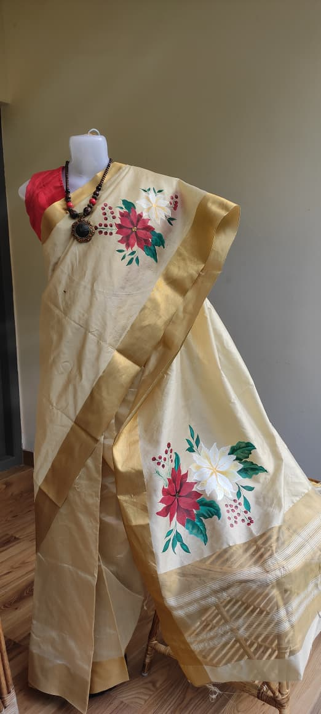
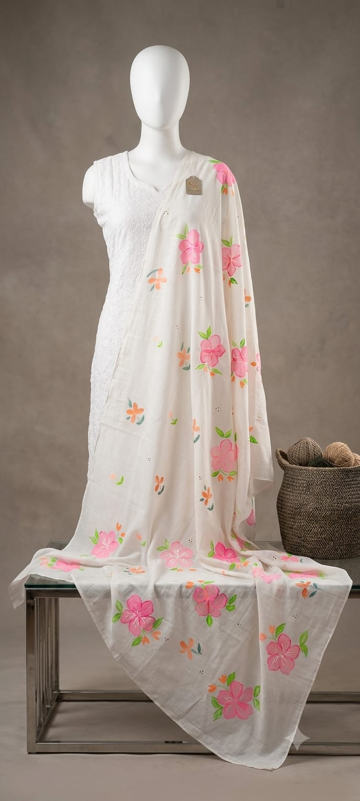

Add gulnar-kurta.jpg
Nilouh Story
Handmade wearable art crafted slowly by women who believe elegance should feel personal, timeless and beautifully unique.
Discover the collection ↓Brand story
Nilouh Story was born from a shared love for art, textiles and timeless beauty. Created by three women—a daughter, mother and aunt—the brand grew from quiet afternoons of painting and draping fabrics.
Inspired by the softness of the blue water lily, each piece brings together hand-painted artistry, luxurious fabrics and thoughtful craftsmanship.
Meet the makers →Shop Nilouh
Explore hand-painted clothing made with softness, craftsmanship and stories made to last.
The current edit
Each Nilouh piece is painted by skilled artists. No mass production. No rushed creation.


The Nilouh promise
To create timeless wearable art that celebrates individuality, femininity, craftsmanship and the beauty of slow handmade fashion.
To craft delicate, artistic textiles by hand—transforming fabrics into meaningful heirloom pieces that allow women to wear elegance in their own unique way.
Hand-painted sarees, dupattas, stoles, salwar sets, silk scarves, and later: tie & dye, block prints, & more.
One-of-a-kind pieces, hand-painted by skilled artists, in premium natural fabrics. Limited creations made with love, patience and perfection.
For the woman who chooses meaning over trends, quality over quantity and artistry over ordinary.
Wear your own story.